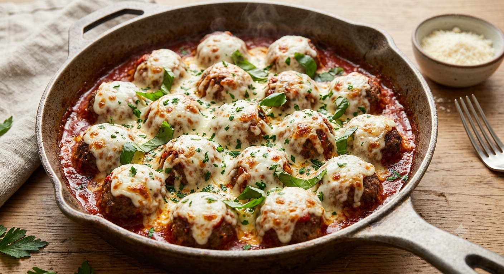

Baked meatballs simmered in marinara and topped with melted mozzarella — straightforward ingredients, no fillers.
Preheat oven to 400°F (200°C). Line a baking sheet with parchment or foil.
In a large bowl, combine the ground beef, parmesan, breadcrumbs, egg, garlic, parsley, salt, and pepper. Mix gently with your hands until just combined — don't overwork it.
Roll the mixture into 16 golf-ball-sized meatballs and place them on the prepared baking sheet, spaced apart.
Bake until browned and mostly cooked through (they'll finish cooking in the sauce).
⏰ 15:00Warm the marinara sauce in a large oven-safe skillet or baking dish over medium heat. Add the baked meatballs and spoon sauce over them.
Sprinkle mozzarella evenly over the meatballs and sauce. Transfer to the oven (or broiler) until the cheese is melted and bubbly.
⏰ 8:00Remove from oven, scatter torn basil on top, and serve.